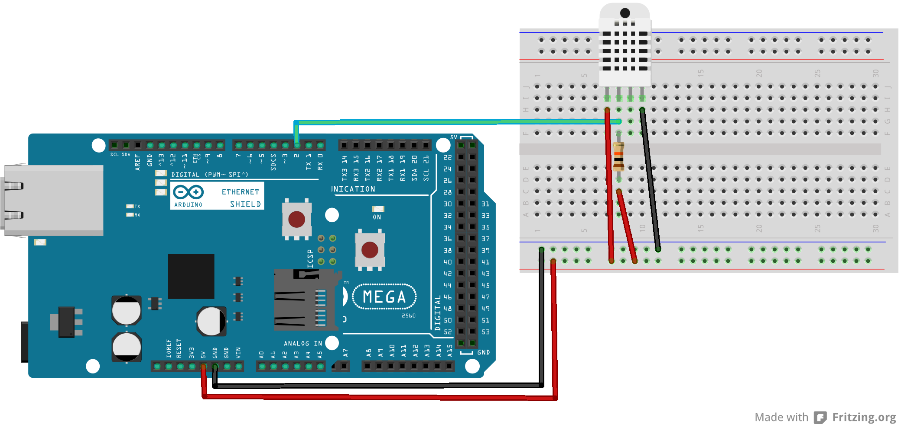
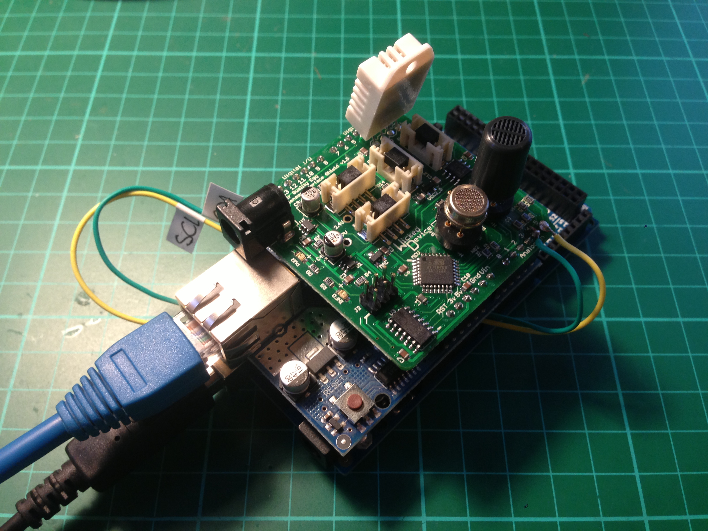

Thing Sensor Report Protocol
If a thing needs to report sensor readings, or an event happening, to the steward it can implement the Thing Sensor Reporting Protocol (TSRP). This is a simple multicast UDP based protocol. For things that need to both report back to the steward and received requests to perform actions, or make measurements at certain times, you should look at the Simple Thing Protocol instead.
Operations
The basics:
All transmissions are uni-directional, from the thing to the steward.
All transmissions are via UDP to port 22601 on multicast address '224.192.32.19'.
All messages are in JSON.
All messages have a requestID parameter, which is a non-empty string. For design cleanliness, each requestID value should be distinct from the previous one.
All messages have a path parameter, which is always '/api/v1/thing/reporting'.
Here is an example:
{ path : '/api/v1/thing/reporting'
, requestID : '1'
, things :
{ '/device/A/B/C' :
{ prototype :
{ device :
{ name : '...'
, maker : '...'
, model :
{ name : '...'
, descr : '...'
, number : '...'
}
}
, name : true
, status : [ 'present', 'absent', 'recent' ]
, properties :
{
// other properties go here...
}
}
, instances :
[ { name : '...'
, status : '...'
, unit :
{ serial : '...'
, udn : 'UID'
}
, info :
{
// other property values go here...
}
, uptime : milliseconds
}
]
}
// other prototype/instance definitions go here...
}
}
In most cases, there will be a single prototype/instance defined. However, for those cases where a device is acting as a concentrator for multiple things, they may be grouped according to make/model (the prototype) and then the values may be sent as an array (the instances). As a practical matter, a single message should be no greater than 1472 octets in length.
Finally, note that there are no security 'enhancements' for this protocol. If you can do 'real' security with the thing in question, then you ought to be doing 'real' security using the Simple Thing Protocol instead of using the Reporting protocol.
Please Read This Carefully!
Observant readers will note that the message format above is a mashup of the prototype, register, and update messages from the Simple Thing Protocol.
Accordingly before deciding how to construct a reporting message, you MUST read the section on Taxonomy of Devices. Please pay particular attention to the section on Measurement Properties.
It is also worthwhile to restate a caution from the documentation on the Simple Thing Protocol: It is imperative that the choice of the udn parameter be both globally-unique and specific to the thing being registered. For example, if the thing is a CO sensor with an Arduino shield, the udn parameter must uniquely identify the CO sensor, regardless of whatever shield is providing the network connectivity.
Think of the udn parameter as the serial number of the sensor, and not the MAC or IP address of the shield: the IP or MAC address of a thing may change, but its serial number never will.
Example Arduino Things
While there is more example code in the repository, including an iOS example, here are a couple of simple examples to show you how to use TSRP on the Arduino.
Weather Station
The following example thing is a simple weather station making use of a DHT-22 temperature and humidity sensor connected to an Arduino Mega with an Arduino Ethernet Shield.

Wiring up the DHT-22 as shown in the above diagram the following code will send a multicast TSRP packet every 2 seconds with the current temperature and humidity readings.
#include <Dhcp.h>
#include <Dns.h>
#include <Ethernet.h>
#include <EthernetClient.h>
#include <EthernetServer.h>
#include <EthernetUdp.h>
#include <util.h>
#include <SPI.h>
#include <DHT.h>
#define DHTTYPE DHT22
const int dhtPin = 2;
DHT dht(dhtPin, DHTTYPE);
int requestID = 1;
byte mac[] = { 0x90, 0xA2, 0xDA, 0x00, 0x1A, 0x08 }; // Arduino MEGA
char packetBuffer[512];
PROGMEM prog_char *loopPacket1 = "{\"path\":\"/api/v1/thing/reporting\",\"requestID\":\"";
PROGMEM prog_char *loopPacket2 = "\",\"things\":{\"/device/climate/arduino/sensor\":{\"prototype\":{\"device\":{\"name\":\"Arduino with DHT-22\",\"maker\":\"Arduino\"},\"name\":true,\"status\":[\"present\",\"absent\",\"recent\"],\"properties\":{\"temperature\":\"celsius\",\"humidity\":\"percentage\"}},\"instances\":[{\"name\":\"Weather Station\",\"status\":\"present\",\"unit\":{\"serial\":\"";
PROGMEM prog_char *loopPacket3 = "\",\"udn\":\"195a42b0-ef6b-11e2-99d0-";
PROGMEM prog_char *loopPacket4 = "-dnt-22\"},\"info\":{\"temperature\":";
PROGMEM prog_char *loopPacket5 = ",\"humidity\":";
PROGMEM prog_char *loopPacket6 = "},\"uptime\":";
PROGMEM prog_char *loopPacket7 = "}]}}}";
EthernetUDP udp;
IPAddress ip(224,192,32,19);
unsigned int port = 22601;
void setup() {
Serial.begin(9600);
Serial.println("Starting...");
while(!Serial) { }
pinMode(dhtPin, INPUT);
Serial.println("Initialising the DHT sensor.");
dht.begin();
Serial.println("Waiting for DHCP address.");
if (Ethernet.begin(mac) == 0) {
Serial.println("Error: Failed to configure Ethernet using DHCP");
while(1) { }
}
udp.beginMulti(ip,port);
}
void loop() {
float h = dht.readHumidity();
float t = dht.readTemperature();
if ( isnan(t) || isnan(h) ) {
Serial.println("Error: Failed to read from DHT.");
} else {
requestID = requestID + 1;
Serial.print( "t = " );
Serial.print( t );
Serial.print( "C, h = ");
Serial.print( h );
Serial.println( "%" );
char buffer[12];
strcpy(packetBuffer,(char*)pgm_read_word(&loopPacket1) );
strcat(packetBuffer, itoa( requestID, buffer, 10) );
strcat(packetBuffer,(char*)pgm_read_word(&loopPacket2) );
for (byte thisByte = 0; thisByte < 6; thisByte++) {
sprintf(buffer, "%x", mac[thisByte] );
strcat(packetBuffer, buffer);
}
strcat(packetBuffer,(char*)pgm_read_word(&loopPacket3) );
for (byte thisByte = 0; thisByte < 6; thisByte++) {
sprintf(buffer, "%x", mac[thisByte] );
strcat(packetBuffer, buffer);
}
strcat(packetBuffer,(char*)pgm_read_word(&loopPacket4) );
strcat(packetBuffer, dtostrf(t,4,2,buffer));
strcat(packetBuffer,(char*)pgm_read_word(&loopPacket5) );
strcat(packetBuffer, dtostrf(h,4,2,buffer));
strcat(packetBuffer,(char*)pgm_read_word(&loopPacket6) );
strcat(packetBuffer, itoa( millis(), buffer, 10) );
strcat(packetBuffer,(char*)pgm_read_word(&loopPacket7) );
Serial.println(packetBuffer);
udp.beginPacket(udp.remoteIP(), udp.remotePort());
udp.write(packetBuffer);
udp.endPacket();
}
delay(2000);
}
This example makes use of the Adafruit DHT Sensor Library which you'll need to install before using the sketch. After installing the library you'll need to restart the Arduino IDE if you already have it open.
Additionally, we make use of multicast UDP. Although supported by the underlying hardware this isn't supported by the stock Ethernet library distributed with the Arduino. You'll need to patch the Ethernet library as below. Add the following declaration to EthernetUdp.h directly after line 55,
// Initialize, start listening on specified port. Returns 1 if successful, 0 if there are no sockets available to use
virtual uint8_t beginMulti(IPAddress, uint16_t);
then add the following code to the end of EthernetUdp.cpp,
/* Start EthernetUDP socket, listening at local port PORT */
uint8_t EthernetUDP::beginMulti(IPAddress ip, uint16_t port) {
Serial.println("beginMulti()");
if (_sock != MAX_SOCK_NUM)
return 0;
for (int i = 0; i < MAX_SOCK_NUM; i++) {
uint8_t s = W5100.readSnSR(i);
if (s == SnSR::CLOSED || s == SnSR::FIN_WAIT) {
_sock = i;
break;
}
}
if (_sock == MAX_SOCK_NUM)
return 0;
// Calculate MAC address from Multicast IP Address
byte mac[] = { 0x01, 0x00, 0x5E, 0x00, 0x00, 0x00 };
mac[3] = ip[1] & 0x7F;
mac[4] = ip[2];
mac[5] = ip[3];
W5100.writeSnDIPR(_sock, rawIPAddress(ip)); //239.255.0.1
W5100.writeSnDPORT(_sock, port);
W5100.writeSnDHAR(_sock,mac);
_remaining = 0;
socket(_sock, SnMR::UDP, port, SnMR::MULTI);
return 1;
}
you shouldn't need to restart the Arduino IDE, the changes will be included next time you compile a sketch.
The EggShield
The following example thing is a simple weather station making use of a Wicked Devices' Egg Shield connected to an Arduino Mega with an Arduino Ethernet Shield.

The Wicked Device Sensor Shield was designed for an Uno-compatible board and the NO2 and CO sensors onboard use an 12C interface. These are on pins A3 (SDA) and A4 (SCL) on an Uno. However because of the high overhead needed for the network stack we need to use a Mega where these pins are located elsewhere. We therefore need to jumper the pins from A3 and A4 to the SDA and SCL pins on the Mega located on the other side of the board.
#include <Wire.h>
#include <Dhcp.h>
#include <Dns.h>
#include <Ethernet.h>
#include <EthernetClient.h>
#include <EthernetServer.h>
#include <EthernetUdp.h>
#include <util.h>
#include <SPI.h>
#include <DHT.h>
#include <EggBus.h>
#define DHTPIN A3 //analog pin 3
#define DHTTYPE DHT22
DHT dht(DHTPIN, DHTTYPE);
EggBus eggBus;
int requestID = 1;
byte mac[] = { 0x90, 0xA2, 0xDA, 0x00, 0x17, 0x2D };
char packetBuffer[768];
PROGMEM prog_char *loopPacket1 = "{\"path\":\"/api/v1/thing/reporting\",\"requestID\":\"";
PROGMEM prog_char *loopPacket2 = "\",\"things\":{\"/device/climate/arduino/sensor\":{\"prototype\":{\"device\":{\"name\":\"Arduino with EggShield\",\"maker\":\"Arduino\"},\"name\":true,\"status\":[\"present\",\"absent\",\"recent\"],\"properties\":{\"no2\":\"ppm\",\"co\":\"ppm\",\"temperature\":\"celsius\",\"humidity\":\"percentage\"}},\"instances\":[{\"name\":\"Air Quality\",\"status\":\"present\",\"unit\":{\"serial\":\"";
PROGMEM prog_char *loopPacket3 = "\",\"udn\":\"195a42b0-ef6b-11e2-99d0-";
PROGMEM prog_char *loopPacket4 = "-egg-shield\"},\"info\":{\"no2\":";
PROGMEM prog_char *loopPacket5 = ",\"co\":";
PROGMEM prog_char *loopPacket6 = ",\"temperature\":";
PROGMEM prog_char *loopPacket7 = ",\"humidity\":";
PROGMEM prog_char *loopPacket8 = "},\"uptime\":";
PROGMEM prog_char *loopPacket9 = "\"}]}}}";
EthernetUDP udp;
IPAddress ip(224,192,32,19);
unsigned int port = 22601;
void setup() {
Serial.begin(9600);
while(!Serial) { }
Serial.println("Starting...");
pinMode(DHTPIN, INPUT);
Serial.println("Initialising the DHT sensor.");
dht.begin();
Serial.println("Waiting for DHCP address.");
if (Ethernet.begin(mac) == 0) {
Serial.println("Error: Failed to configure Ethernet using DHCP");
while(1) { }
}
udp.beginMulti(ip,port);
}
void loop() {
float h = dht.readHumidity();
float t = dht.readTemperature();
float no2 = 0.0;
float co = 0.0;
uint8_t egg_bus_address;
float i_scaler = 0.0;
uint32_t r0 = 0;
uint32_t measured_value = 0;
eggBus.init();
while((egg_bus_address = eggBus.next())){
uint8_t numSensors = eggBus.getNumSensors();
for(uint8_t ii = 0; ii < numSensors; ii++){
i_scaler = eggBus.getIndependentScaler(ii);
measured_value = eggBus.getSensorIndependentVariableMeasure(ii);
r0 = eggBus.getSensorR0(ii);
if (strcmp(eggBus.getSensorType(ii), "NO2") == 0) {
no2 = measured_value * i_scaler * r0;
} else if (strcmp(eggBus.getSensorType(ii), "CO") == 0) {
co = measured_value * i_scaler * r0;
}
}
}
h = dht.readHumidity();
t = dht.readTemperature();
no2 = no2/1000;
co = co/1000;
Serial.print( "t = " );
Serial.print( t );
Serial.print( "C, h = ");
Serial.print( h );
Serial.print( "%, no2 = " );
Serial.print( no2/1000 );
Serial.print( "ppm, co = " );
Serial.print( co/1000 );
Serial.println( "ppm" );
char buffer[24];
strcpy(packetBuffer,(char*)pgm_read_word(&loopPacket1) );
strcat(packetBuffer, itoa( requestID, buffer, 10) );
strcat(packetBuffer,(char*)pgm_read_word(&loopPacket2) );
for (byte thisByte = 0; thisByte < 6; thisByte++) {
sprintf(buffer, "%x", mac[thisByte] );
strcat(packetBuffer, buffer);
}
strcat(packetBuffer,(char*)pgm_read_word(&loopPacket3) );
for (byte thisByte = 0; thisByte < 6; thisByte++) {
sprintf(buffer, "%x", mac[thisByte] );
strcat(packetBuffer, buffer);
}
strcat(packetBuffer,(char*)pgm_read_word(&loopPacket4) );
strcat(packetBuffer, dtostrf(no2,12,4,buffer));
strcat(packetBuffer,(char*)pgm_read_word(&loopPacket5) );
strcat(packetBuffer, dtostrf(co,12,4,buffer));
strcat(packetBuffer,(char*)pgm_read_word(&loopPacket6) );
strcat(packetBuffer, dtostrf(t,4,2,buffer));
strcat(packetBuffer,(char*)pgm_read_word(&loopPacket7) );
strcat(packetBuffer, dtostrf(h,4,2,buffer));
strcat(packetBuffer,(char*)pgm_read_word(&loopPacket8) );
strcat(packetBuffer, itoa( millis(), buffer, 10) );
strcat(packetBuffer,(char*)pgm_read_word(&loopPacket9) );
Serial.println(packetBuffer);
udp.beginPacket(udp.remoteIP(), udp.remotePort());
udp.write(packetBuffer);
udp.endPacket();
requestID = requestID + 1;
delay(2500);
}
This example makes use of the Wicked Devices' EggBus library which you'll need to install before using the sketch. After installing the library you'll need to restart the Arduino IDE if you already have it open.